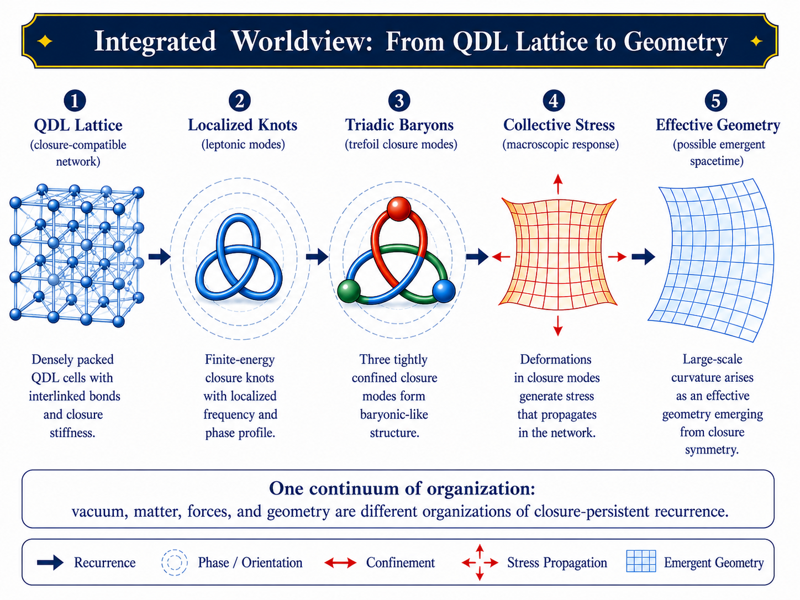
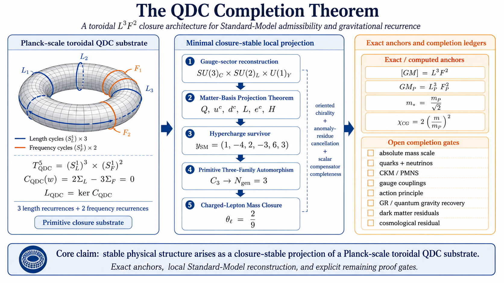
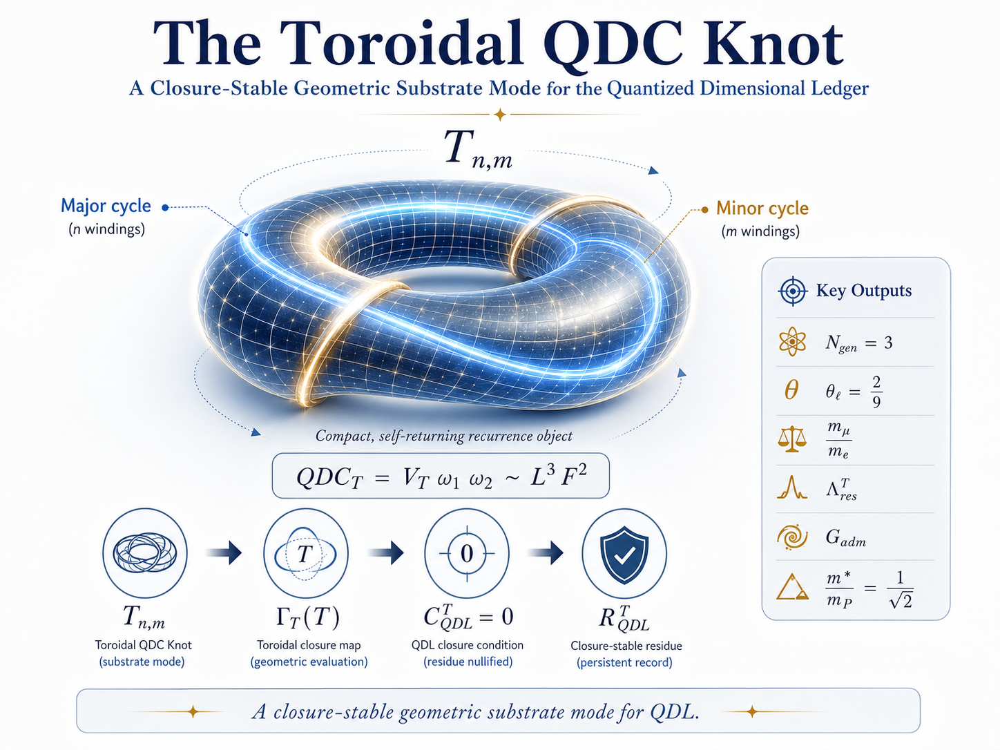

QDL for Metrology
The 2026 journal article on dimensional closure, QMU ledgers and physical constants.
A practical entry point to the QDL Physics Institute's published scholarship, mathematical results, executable software, computational records and independent-evaluation materials.
Resources are organized by what an outside reader can inspect and test. The peer-reviewed metrology foundation, exact model mathematics and working prototypes are presented separately from conditional QDC physical interpretations.
The Research Program provides the controlling October 2026 scientific status. The Publications page gives the broader bibliographic record.
For a technical reviewer, the recommended order is published method, executable demonstration, mathematical definitions and reproducibility evidence.
The 2026 journal article on dimensional closure, QMU ledgers and physical constants.
Test declared ledger vectors under user-selected subgroup and modular rules.
A long-form account of closure mathematics, model assumptions and physical limits.
Finite constructions and machine-readable materials for independent checking.
The Institute welcomes independent written assessment of three separable research subjects. A reviewer need not accept the QDC spacetime hypothesis in order to evaluate the mathematics or measurement software.
Verify the closure parametrization, native-root count, reversible-contact identities and declared finite-network certificates. Assess mathematical novelty against existing literature.
Compare a frozen QDL software version with conventional dimensional, semantic-type and workflow validators on independently adjudicated cases.
Separate conditional QDC constructions from physically motivated dynamics, evaluate proposed discriminants and identify the missing evidence for a physical carrier.
Review objective: a documented technical finding, including limitations and negative results—not an endorsement of unverified physical unification.
These are functioning demonstrations and research prototypes, not independently certified measurement products.
Enter an integer vector in the declared 3L+2F basis; specify a closure direction and modular diagnostic; compute membership and view a report. The calculator does not simulate physical QDC dynamics.
Technical distinction: the default test is exact membership in w = k(1,1,1,1,1). This is more restrictive than membership in the full rank-four kernel C(w) = 0. Failing one rule does not automatically imply failing the other.
Research implementations examine declared quantity relationships, calibration workflows, structural rules, provenance and audit traces. Internal controlled tests and public-data exercises demonstrate implemented behavior under their stated assumptions.
Current limit: incremental error-detection value over suitable existing tools has not been established by independent blinded comparison.
The Institute reports a May 3, 2026 U.S. provisional patent filing (Application No. 64/055,985) that includes a v0.1 program appendix. This is not an issued patent.
A frozen nonconfidential code-and-test handoff would need to be supplied for an independent pilot. No public MIE download is represented here.
Selected identities are exact within the defined QDL mathematical model. They do not prove that nature contains physical QDCs.
The complete integer kernel has rank four, and its projected sums are (3k,2k), corresponding to integer powers of L³F².
The Q=1 shell has eight integer roots. The specified CONTACT-37 map is an involution and conserves its two-state sum.
The canonical finite graph has 16 vertices, 27 edges and 12 independent cycles. Its declared 30-loop frame satisfies ΣCCᵀ = 56I₃.
Frozen source records are preferable to reconstructed accounts. Reviewers should check versions, declared inputs, outputs, code availability and the precise scope of each claim.
Finite closure ledgers, recurrence structures and related machine-readable research records.
Historical model-development gates, assumptions, reproducibility materials and falsification decisions.
A selected source-anchored Warsaw-basis operator-mixing audit, with conditional ledger classifications.
The publication hierarchy follows the new homepage: published metrology first, mathematical foundations second, and historical physical-model syntheses clearly labeled.
Dimensional Closure, QMU Ledgers, and the Ontology of Physical Constants. Journal of Theoretical and Applied Physics (2026).
Foundational synthesis of dimensional closure, structural admissibility, model constructions and open questions.
A frozen theorem, computation and open-problem record. The October 2026 scientific assessment supersedes its older status descriptions; the original record is unchanged.
The integrated internal reference consolidates CONTACT-37, the finite-model results, representation studies and Phase IV Emergent Universality, including the unverified physical-origin requirement.
No public DOI or peer-reviewed status is asserted for this edition. Qualified reviewers may request it from the Institute.
Methodological benchmarks and conditional grand-unification comparisons. These resources are not new experimental discoveries.
Research checks using declared models and public-data evaluation logic.
A reusable measurement-data evaluation example.
Optical-cavity resonance model adequacy and residual comparison.
Grand-unification model comparisons, not a selected QDC physical theory.
Preserved research chronology. These records should be read under their original assumptions and the October 2026 claim boundaries.
Historical program methodology and research-gate design.
Earlier conditional physical-substrate interpretation.
Compact recurrence and hypothetical substrate geometry.
Historical matter, family and gravity-model constructions.
Numerical reconstruction; not a prospectively confirmed no-fit prediction.
Dimensional interpretation of μ=GM and Keplerian closure.
Existing site graphics are preserved. They illustrate mathematical models and earlier physical hypotheses; none is visual evidence that the depicted substrate or particles have been observed.





An accessible introductory book about the mathematical and proposed physical perspectives of the QDL program. Its historical interpretations should be compared with the current Research Program.
Open Zenodo book record · Amazon Kindle listing
QDL in 5 Minutes offers a shorter website introduction.
| Goal | Recommended resource | Evidence caution |
|---|---|---|
| Check a published scientific claim | Bibliography and the journal or DOI source | Read the specific record's review status and version. |
| Reproduce a finite mathematical result | Exact mathematics and verification archives | Confirm whether the linked record contains the exact October proof and verifier. |
| Try an executable structural rule | Public calculator | Selected subgroup membership is not the full closure kernel. |
| Evaluate practical software value | MIE research overview and a requested frozen test package | No independent comparative advantage is established. |
| Understand the physical hypothesis | Current research status and historical graphics | QDC physical ontology and dynamics remain unverified. |
James D. Bourassa
Founder and Director, QDL Physics Institute
Huntley, Illinois, USA
For mathematical verification materials, a nonconfidential software-evaluation handoff, the internal October V2.1 manuscript or scientific review correspondence, contact the Institute directly.